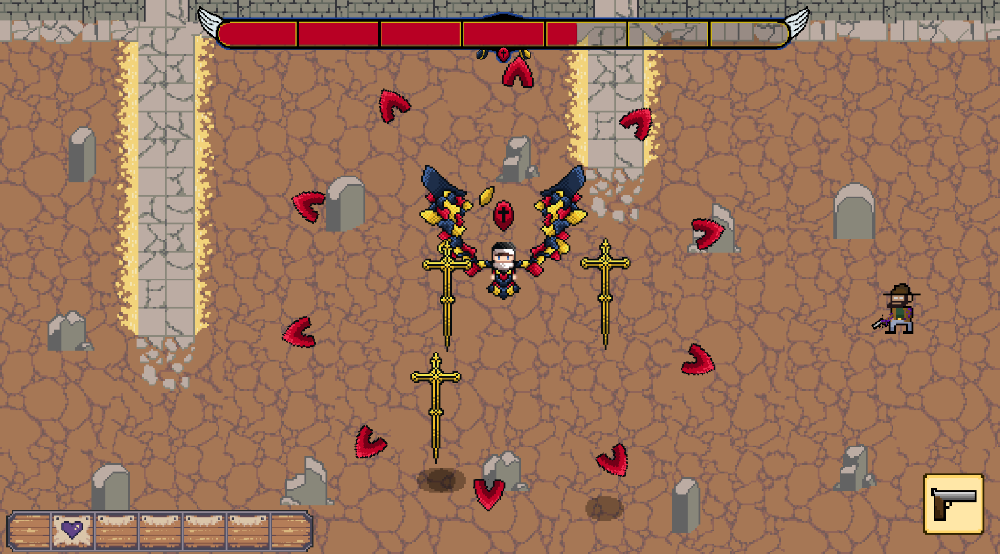
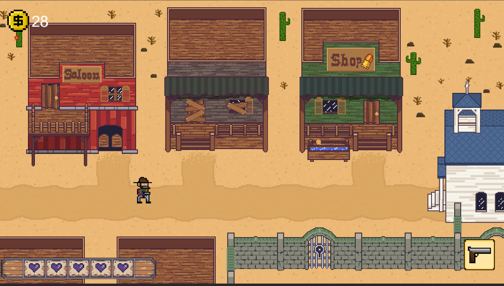
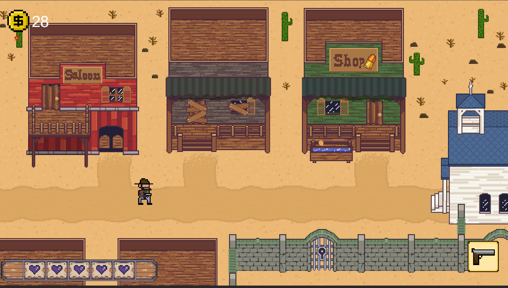

Final Game Recap
Created: 12/7/23
Tags:
The game I helped create is called Devil's Acre. It is a roguelike, bullet-hell shooter
that focuses on a character who is trying to lift a curse on him and must destroy enemies
within a thought-to-be deserted town. The theme of the game is the Wild West with a hint
of fantasy to liven the mood.
I ended up joining the team after alpha testing that had three other members. I ended up
helping out in both programming and art. My main goal in both areas was to remodel and
improve on old code and assets. I also help create brand new assets such as the town
scene and the shop scene. For coding, I worked on scene transfer data along with singletons
to create an audio controller. Some code I improved on was the wave spawning code and also
the boss attack code.
I think some of the best things to come out of this game is the variety of enemies and how they all have different attacks. The total amount of enemies is 5 not including the boss. The boss is also a really cool character who currently has 6 different attack types that are all unique in their own way. The game overall is challenging for players not used to bullet hell, but all the cool mechanics of the game really help make it a fun experience.
I think some of the main things I learned during this project was in the coding field in which I learned more about the audio system, creating a dialogue system, and also the different ways to rotate and move objects using built-in Unity functions. The project as a whole, was really fun to work on and my team was amazing and active through the entire sprint.

 
